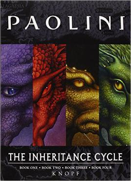
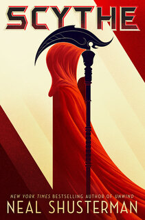
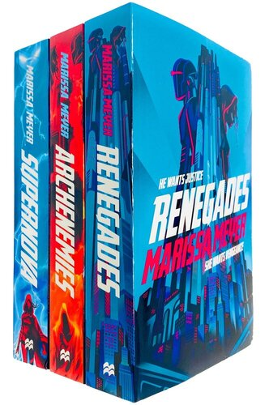

The inheritance Cycle

- This series conatains the books Eragon, Eldest, Brisingr, and Inheritance
- Author: Christopher Paolini
- High fantasy
- This series is in a typical fantasy setting. It follows a boy and his dragon as they go around and try to save the land from a tyrant. This story has an amazing magic system, and is one of my favorite book series. of all time.
Wheel of Time

- The first book is called "The eye of the world" and the series has 14 books
- Author: Robert Jordan
- High fantasy
- The wheel of time series is also in your typical medieval fantasy setting. This book has nurmous characters it follows, and although it can difficult to keep track of them all sometimes, it is worth it. It's story revolves around fighting the "Dark One", who is an evil creature, and those who serve him. I loved reading all 14 of these books, so they will definitely keep you occupied for a while
Arc of a Scythe

- The series contains, Scythe, Thunderhead, and The Toll
- Author: Neal Shusterman
- dystopian science fiction
- This trilogy is a very unique sci-fi series. It is set in a dystopian world where everyone can live forever, and has perfect health. There is also AI that controls everything, but the AI wants to help humanity and is written in a very possitive light . The story follows two characters whose job is to kill people to control the population, and the antainonist is other people who share their job
Renegades

- Renegades, Archenemies, and Supernova
- Author: Marissa Meyer
- Science Fiction
- This sci-fi series follows the "villain" inflitrating the good guys. In this modern world there is a random chance for anyone to be born with a unique superpower. This trilogy tells a great story and is a really good read for a villians vs superheros story, with a bit of a twist